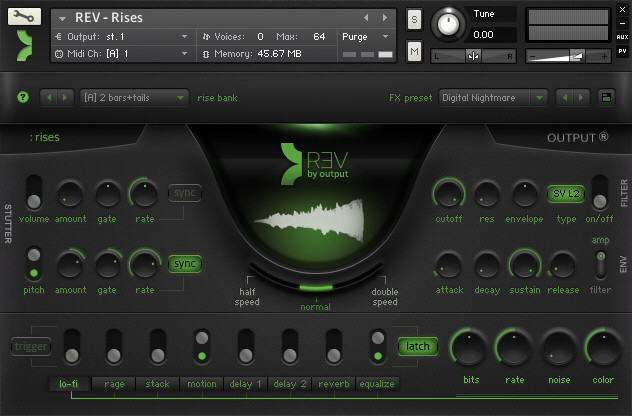

<?xml version="1.0" encoding="UTF-8"?><rss version="2.0"
	xmlns:content="http://purl.org/rss/1.0/modules/content/"
	xmlns:wfw="http://wellformedweb.org/CommentAPI/"
	xmlns:dc="http://purl.org/dc/elements/1.1/"
	xmlns:atom="http://www.w3.org/2005/Atom"
	xmlns:sy="http://purl.org/rss/1.0/modules/syndication/"
	xmlns:slash="http://purl.org/rss/1.0/modules/slash/"
	xmlns:itunes="http://www.itunes.com/dtds/podcast-1.0.dtd"
xmlns:rawvoice="http://www.rawvoice.com/rawvoiceRssModule/"
xmlns:googleplay="http://www.google.com/schemas/play-podcasts/1.0"

xmlns:georss="http://www.georss.org/georss" xmlns:geo="http://www.w3.org/2003/01/geo/wgs84_pos#"
>

<channel>
	<title>sample &#8211; SCOREcastOnline.com</title>
	<atom:link href="." rel="self" type="application/rss+xml" />
	<link>http://www.scorecastonline.com</link>
	<description>Global Community for the Professional Media Composer</description>
	<lastBuildDate>
	Sun, 07 Apr 2019 10:06:34 +0000	</lastBuildDate>
	<language>en-US</language>
	<sy:updatePeriod>
	hourly	</sy:updatePeriod>
	<sy:updateFrequency>
	1	</sy:updateFrequency>
	<generator>https://wordpress.org/?v=5.1.1</generator>
<!-- podcast_generator="Blubrry PowerPress/7.4" mode="advanced" feedslug="feed" Blubrry PowerPress Podcasting plugin for WordPress (https://www.blubrry.com/powerpress/) -->
	<itunes:summary>Global Community for the Professional Media Composer</itunes:summary>
	<itunes:author>sample &#8211; SCOREcastOnline.com</itunes:author>
	<itunes:image href="../../../wp-content/plugins/powerpress/itunes_default.jpg" />
	<itunes:subtitle>Global Community for the Professional Media Composer</itunes:subtitle>
	<image>
		<title>sample &#8211; SCOREcastOnline.com</title>
		<url>../../../wp-content/uploads/powerpress/sig-SCO.jpg</url>
		<link>http://www.scorecastonline.com</link>
	</image>
<site xmlns="com-wordpress:feed-additions:1">29563098</site>	<item>
		<title>SPOTLIGHT ON: Output&#8217;s SIGNAL</title>
		<link>../../../2015/09/14/spotlight-on-output-signal/</link>
				<comments>../../../2015/09/14/spotlight-on-output-signal/#respond</comments>
				<pubDate>Mon, 14 Sep 2015 23:42:36 +0000</pubDate>
		<dc:creator><![CDATA[Eanan Patterson]]></dc:creator>
				<category><![CDATA[Spotlight ON]]></category>
		<category><![CDATA[design]]></category>
		<category><![CDATA[gear]]></category>
		<category><![CDATA[kontakt]]></category>
		<category><![CDATA[library]]></category>
		<category><![CDATA[pulse]]></category>
		<category><![CDATA[sample]]></category>
		<category><![CDATA[sound]]></category>

		<guid isPermaLink="false">../../../?p=2250</guid>
				<description><![CDATA[In this episode of SPOTLIGHT ON edition, Éanán and Stellita take a comprehensive journey through the inner workings of Output's new pulsating monster - SIGNAL.]]></description>
								<content:encoded><![CDATA[<p>In this brand new edition of SCOREcast&#8217;s SPOTLIGHT ON, Éanán Paterson and Stellita Loukas bring you along on a deep dive through Output&#8217;s newest flagship product SIGNAL — a beast of a library driven by two independent pulse engines — that will breathe new life and glorious color into your music.</p>
<p>For more information and to purchase, please visit the <a href="http://outputsounds.com/products/signal/" target="_blank">OUTPUT</a> website.</p>
<p>If you cannot see the video below, please click <a href="https://youtu.be/qgET9k49_cw" target="_blank">here</a>.</p>
<p><iframe src="https://www.youtube.com/embed/qgET9k49_cw" width="560" height="315" frameborder="0" allowfullscreen="allowfullscreen"></iframe></p>
]]></content:encoded>
							<wfw:commentRss>../../../2015/09/14/spotlight-on-output-signal/feed/</wfw:commentRss>
		<slash:comments>0</slash:comments>
						<post-id xmlns="com-wordpress:feed-additions:1">2250</post-id>	</item>
		<item>
		<title>SPOTLIGHT ON: SoundIron&#8217;s Apocalypse Elements</title>
		<link>../../../2014/02/03/spotlight-on-soundirons-apocalypse-elements/</link>
				<comments>../../../2014/02/03/spotlight-on-soundirons-apocalypse-elements/#respond</comments>
				<pubDate>Tue, 04 Feb 2014 01:56:52 +0000</pubDate>
		<dc:creator><![CDATA[SCO Editorial Staff]]></dc:creator>
				<category><![CDATA[Spotlight ON]]></category>
		<category><![CDATA[drums]]></category>
		<category><![CDATA[gear]]></category>
		<category><![CDATA[kontakt]]></category>
		<category><![CDATA[library]]></category>
		<category><![CDATA[percussion]]></category>
		<category><![CDATA[sample]]></category>

		<guid isPermaLink="false">../../../?p=2146</guid>
				<description><![CDATA[In this SPOTLIGHT ON edition, Marie-Anne Fischer takes you on a deep sonic journey through SoundIron's hard-hitting APOCALYPSE ELEMENTS library.]]></description>
								<content:encoded><![CDATA[<p>In this edition of SCOREcast&#8217;s SPOTLIGHT ON, Marie-Anne Fischer takes you on a deep sonic journey through SoundIron&#8217;s hard-hitting APOCALYPSE ELEMENTS library — a mighty 4.3 gigabyte collection of aggressive scoring and concert percussion.</p>
<p>For more information and to purchase, please visit the <a href="http://www.soundiron.com/instruments/percussion/ae/" target="_blank">SOUNDIRON</a> website.</p>
<p>If you cannot see the video below, please click <a href="http://youtu.be/qZIWfxABttc" target="_blank">here</a>.</p>
<p><iframe src="//www.youtube.com/embed/qZIWfxABttc?rel=0" height="318" width="566" allowfullscreen="" frameborder="0"></iframe></p>
]]></content:encoded>
							<wfw:commentRss>../../../2014/02/03/spotlight-on-soundirons-apocalypse-elements/feed/</wfw:commentRss>
		<slash:comments>0</slash:comments>
						<post-id xmlns="com-wordpress:feed-additions:1">2146</post-id>	</item>
		<item>
		<title>SPOTLIGHT ON: Cinesamples&#8217; CinePerc Part 4: AUX</title>
		<link>../../../2013/12/26/spotlight-on-cinesamples-cineperc-part-4-aux/</link>
				<comments>../../../2013/12/26/spotlight-on-cinesamples-cineperc-part-4-aux/#respond</comments>
				<pubDate>Fri, 27 Dec 2013 00:09:35 +0000</pubDate>
		<dc:creator><![CDATA[Eanan Patterson]]></dc:creator>
				<category><![CDATA[Spotlight ON]]></category>
		<category><![CDATA[gear]]></category>
		<category><![CDATA[kontakt]]></category>
		<category><![CDATA[orchestra]]></category>
		<category><![CDATA[sample]]></category>
		<category><![CDATA[spotlight on]]></category>
		<category><![CDATA[studio]]></category>

		<guid isPermaLink="false">../../../?p=2136</guid>
				<description><![CDATA[In the fourth and final installment of SCOREcast's overview of Cinesamples' flagship percussion library, CinePerc, Éanán Patterson takes a deep look at CinePerc AUX.]]></description>
								<content:encoded><![CDATA[<p>In the fourth and final installment of SCOREcast&#8217;s SPOTLIGHT ON comprehensive overview of Cinesamples&#8217; flagship percussion library, CinePerc, Éanán Patterson takes a deep look at CinePerc AUX, the series&#8217; most exciting component yet.</p>
<p>For more information and to purchase, please visit the <a href="http://cinesamples.com/products/cineperc/" target="_blank">CINESAMPLES</a> website.</p>
<p>If you cannot see the video below, please click <a href="http://youtu.be/SamEeU-bU0M" target="_blank">here</a>.</p>
<p><iframe src="//www.youtube.com/embed/SamEeU-bU0M?rel=0" height="318" width="566" allowfullscreen="" frameborder="0"></iframe></p>
<h2>Watch the Entire SPOTLIGHT ON CinePerc Series</h2>
<ul>
<li><strong><a href="../../../2013/09/29/spotlight-on-cinesamples-cineperc-part-3-epic" target="_blank">Part 3: CinePerc EPIC</a></strong></li>
<li><a href="../../../2013/09/12/spotlight-on-cinesamples-cineperc-part-2-pro" target="_blank"><strong>Part 2: CinePerc PRO</strong></a></li>
<li><a href="../../../2013/08/27/spotlight-on-cinesamples-cineperc-part-1-core" target="_blank"><strong>Part 1: CinePerc CORE</strong></a></li>
</ul>
]]></content:encoded>
							<wfw:commentRss>../../../2013/12/26/spotlight-on-cinesamples-cineperc-part-4-aux/feed/</wfw:commentRss>
		<slash:comments>0</slash:comments>
						<post-id xmlns="com-wordpress:feed-additions:1">2136</post-id>	</item>
		<item>
		<title>SCOREcast 040: If I Started Today: Sample Libraries</title>
		<link>../../../2013/11/26/scorecast-40-if-i-started-today1/</link>
				<comments>../../../2013/11/26/scorecast-40-if-i-started-today1/#respond</comments>
				<pubDate>Tue, 26 Nov 2013 18:48:33 +0000</pubDate>
		<dc:creator><![CDATA[SCO Editorial Staff]]></dc:creator>
				<category><![CDATA[The SCOREcast Podcast Show]]></category>
		<category><![CDATA[gear]]></category>
		<category><![CDATA[kontakt]]></category>
		<category><![CDATA[library]]></category>
		<category><![CDATA[orchestra]]></category>
		<category><![CDATA[podcast show]]></category>
		<category><![CDATA[sample]]></category>
		<category><![CDATA[studio]]></category>

		<guid isPermaLink="false">../../../?p=2133</guid>
				<description><![CDATA[Composers Éanán Patterson and Ryan Scully join Deane and Brian to pick through the current market of sample libraries in search of which essential tools every beginning composer should own.]]></description>
								<content:encoded><![CDATA[<p><center><iframe style="border: none;" src="//html5-player.libsyn.com/embed/episode/id/3153235/height/320/width/684/theme/standard/direction/no/autoplay/no/autonext/no/thumbnail/yes/preload/no/no_addthis/no/" width="684" height="320" scrolling="no" allowfullscreen="allowfullscreen"></iframe></center><br />
Deane and Brian invite composers Éanán Patterson and Ryan Scully on the show to pick through the current market of sample libraries in search of which essential tools every beginning composer should grab. It&#8217;s an hour and forty minutes of non-stop gear porn as the boys spread the holiday cheer by tempting you with all kinds of potential bank account-ruining goodies&#8230;. otherwise known as SCOREcast Podcast Show #40! Don&#8217;t miss it!</p>
<h1>Where to Listen</h1>
<h3><a title="SCOREcast at iTunes" href="https://itunes.apple.com/us/podcast/the-scorecast-podcast-show/id683848476" target="_blank">iTunes</a></h3>
<h3><a title="SCOREcast at Stitcher Radio" href="http://app.stitcher.com/browse/feed/28885/episodes" target="_blank">Stitcher Radio</a></h3>
<h1></h1>
<h1>Rundown</h1>
<p><em><strong>Digital Audio Workstations (15:00)</strong></em></p>
<ol>
<li><a href="http://www.avid.com/US/products/family/pro-tools" target="_blank">Avid ProTools</a></li>
<li><a href="http://www.steinberg.net/en/products/cubase/start.html" target="_blank">Steinberg Cubase</a></li>
<li><a href="http://www.motu.com/products/software/dp" target="_blank">MOTU Digital Performer</a></li>
<li><a href="http://www.apple.com/logic-pro/" target="_blank">Apple Logic X</a></li>
</ol>
<p><em><strong>Samplers (27:05)</strong></em></p>
<ol>
<li><a href="http://www.native-instruments.com/en/products/komplete/synths-samplers/kontakt-5/" target="_blank">Native Instruments Kontakt</a></li>
<li><a href="http://www.uvi.net/en/software/uvi-workstation.html" target="_blank">UVI/MachFive</a></li>
<li><a href="http://www.soundsonline.com/2013-PLAY" target="_blank">EastWest PLAY</a></li>
<li><a href="http://www.bestservice.de/service.asp/downloads/en" target="_blank">Best Service Engine</a></li>
</ol>
<p><em><strong>Orchestral Strings (30:55)</strong></em></p>
<ol>
<li><a href="http://www.spitfireaudio.com/albion.html" target="_blank">Spitfire Albion</a></li>
<li><a href="http://www.cinematicstrings.com" target="_blank">Cinematic Strings</a></li>
<li><a href="http://audiobro.com" target="_blank">LA Scoring Strings</a> (LASS)</li>
<li><a href="http://www.native-instruments.com/en/products/komplete/orchestral-cinematic/action-strings/" target="_blank">NI Action Strings</a></li>
<li><a href="http://www.sonokinetic.net/products/classical/minimal/" target="_blank">Sonokinetic Vivace, Tutti, Da Capo, Minimal</a></li>
<li><a href="http://cinesamples.com/products/cinestrings/" target="_blank">CineSamples CineStrings</a></li>
</ol>
<p><em><strong>Orchestral Brass (43:27)</strong></em></p>
<ol>
<li><a href="http://cinesamples.com/products/cinebrass/" target="_blank">CineSamples CineBrass CORE/PRO</a></li>
<li><a href="http://www.samplemodeling.com/en/products_trumpet.php" target="_blank">Sample Modeling &#8220;The Trumpet&#8221;</a></li>
<li><a href="http://embertone.com/instruments/chapman-trumpet.php" target="_blank">Embertone &#8220;Chapman Trumpet&#8221;</a></li>
</ol>
<p><em><strong>Workhorse General MIDI (52:55)</strong></em></p>
<ol>
<li><a href="http://www.projectsam.com/Products/Essentials-Series" target="_blank">Project SAM Orchestral Essentials</a></li>
<li><a href="http://www.projectsam.com/Products/Symphobia-Series" target="_blank">Project SAM Symphobia series</a></li>
<li><a href="http://www.soundsonline.com/Goliath" target="_blank">EastWest Goliath</a></li>
<li><a href="http://www.native-instruments.com/en/products/komplete" target="_blank">Native Instruments KOMPLETE</a></li>
</ol>
<p><em><strong>Workhorse Synthesizer (01:01:05)</strong></em></p>
<ol>
<li><a href="http://www.spectrasonics.net/products/omnisphere.php" target="_blank">Spectrasonics Omnisphere</a></li>
<li><a href="http://www.u-he.com/cms/zebra" target="_blank">u-he Zebra</a></li>
<li><a href="http://www.camelaudio.com/Alchemy.php" target="_blank">Camel Audio Alchemy</a></li>
<li><a href="http://www.pluginguru.com" target="_blank">Plugin Guru/John &#8220;Skippy&#8221; Lehmkuhl</a> (virtual synth preset packs)</li>
<li><a href="http://www.theunfinished.co.uk" target="_blank">Matt Bowdler/The Unfinished</a> (virtual synth preset packs)</li>
</ol>
<p>&nbsp;</p>
<p><em><strong>Orchestral Woodwinds (01:06:45)</strong></em></p>
<ol>
<li><a href="http://www.orchestraltools.com/page2/index.php" target="_blank">Orchestral Tools Berlin Woodwinds</a></li>
<li><a href="http://cinesamples.com/products/cinewinds/" target="_blank">CineSamples CineWinds CORE/PRO</a></li>
<li><a href="http://www.soundsonline.com/Symphonic-Orchestra" target="_blank">EastWest Quantum Leap Symphonic Orchestral Woodwinds</a></li>
<li><a href="http://cinesamples.com/products/hollywoodwinds/" target="_blank">CineSamples Hollywood Winds</a></li>
</ol>
<p><em><strong>Ethnic Woodwinds (01:12:25)</strong></em></p>
<ol>
<li>Eduardo Tarilonte&#8217;s Anthology Series</li>
</ol>
<ul>
<ul>
<li><a href="http://www.samplelibraries.com/?page_id=766" target="_blank">Anthology Celtic Wind</a></li>
<li><a href="http://www.samplelibraries.com/?page_id=760" target="_blank">Anthology Spiritual Wind</a></li>
</ul>
</ul>
<p><em><strong>Orchestral Percussion (01:17:20)</strong></em></p>
<ol>
<li><a href="http://cinesamples.com/products/cineperc/" target="_blank">CineSamples CinePerc CORE/PRO</a></li>
<li><a href="http://www.spitfireaudio.com/spitfire-percussion" target="_blank">Spitfire Percussion</a></li>
<li><a href="http://www.projectsam.com/Products/True-Strike-Series" target="_blank">Project SAM True Strike 1</a></li>
</ol>
<p><em><strong>Epic or Acoustic Drums (01:22:15)</strong></em></p>
<ol>
<li><a href="http://www.heavyocity.com/product/damage/" target="_blank">Heavyocity Damage</a></li>
<li><a href="http://www.toontrack.com/ezdrummerline.asp" target="_blank">Toontrack EZDrummer/Superior Drummer</a></li>
<li><a href="http://www.spectrasonics.net/products/stylusrmx.php" target="_blank">Spectrasonics Stylus RMX</a></li>
<li><a href="http://www.native-instruments.com/en/products/komplete/drums/studio-drummer/overview/the-drummer/" target="_blank">Native Instruments Studio Drummer</a></li>
<li><a href="http://www.soundiron.com/instruments/percussion/apocalypse/" target="_blank">SoundIron Apocalypse Percussion Ensemble 2</a> (APE)</li>
</ol>
<p><em><strong>Workhorse Ethnic Suite/Collection (01:32:53)</strong></em></p>
<ol>
<li><a href="http://www.samplelibraries.com/?page_id=598" target="_blank">Eduardo Tarilonte&#8217;s Forest Kingdom II</a></li>
<li><a href="http://www.samplelibraries.com/?page_id=933" target="_blank">Eduardo Tarilonte&#8217;s ERA Medieval Legends</a></li>
<li><a href="http://www.sonokinetic.net" target="_blank">Sonokinetic Collection</a></li>
</ol>
<p><em><strong>Epic Choir/Vocal (01:38:28)</strong></em></p>
<ol>
<li><a href="http://www.soundiron.com/instruments/choirs/" target="_blank">SoundIron Olympus Choral Collection</a></li>
<li><a href="http://8dio.com/instrument/requiem-professional/" target="_blank">8Dio Requiem Professional</a></li>
<li><a href="http://8dio.com/instrument-category/solo-vocals/" target="_blank">8Dio Solo Vocals</a></li>
</ol>
<p>&nbsp;</p>
<h1>Featured Composer: Stefan French</h1>
<p>Stefan French is a Dublin-based film composer providing original music for film, television and a variety of other media. Stefan has also gained recognition as a copyist, an arranger, a music editor and a music supervisor. As a producer, he worked on the album &#8216;Another Day of Life&#8217; by Irish songwriter Adrian Mannering and the song &#8216;Lovers&#8217; was featured on the RTE Radio 1 program &#8216;Roots Freeway&#8217; in early 2012. He is currently working again as producer with another Irish artist for an upcoming release.</p>
<p><a href="http://www.stefanfrench.com" target="_blank">http://www.stefanfrench.com</a></p>
<p><a href="https://soundcloud.com/stefanfrench" target="_blank">https://soundcloud.com/stefanfrench</a></p>
<h1></h1>
<h1>On-Air Questions</h1>
<p>Have a question or a comment you&#8217;d like addressed on-air? Send Deane and Brian an email at <a href="mailto:scorecastonline@gmail.com" target="_blank">scorecastonline@gmail.com</a>.</p>
<div>
<p>*<em>Note: By submitting your question via email, you are hereby granting SCOREcastOnline.com permission to re-broadcast/re-read your message on the air in a future episode of the SCOREcast Podcast Show. However, SCOREcastOnline.com makes no guarantee that your email message will be used in a broadcast.</em></p>
</div>
]]></content:encoded>
							<wfw:commentRss>../../../2013/11/26/scorecast-40-if-i-started-today1/feed/</wfw:commentRss>
		<slash:comments>0</slash:comments>
						<post-id xmlns="com-wordpress:feed-additions:1">2133</post-id>	</item>
		<item>
		<title>REVIEW: REV by Output</title>
		<link>../../../2013/11/20/review-rev-by-output/</link>
				<comments>../../../2013/11/20/review-rev-by-output/#respond</comments>
				<pubDate>Wed, 20 Nov 2013 15:04:48 +0000</pubDate>
		<dc:creator><![CDATA[Guy Rowland]]></dc:creator>
				<category><![CDATA[Product reviews]]></category>
		<category><![CDATA[gear]]></category>
		<category><![CDATA[kontakt]]></category>
		<category><![CDATA[sample]]></category>
		<category><![CDATA[studio]]></category>

		<guid isPermaLink="false">../../../?p=2128</guid>
				<description><![CDATA[A library in reverse? The description may raise a skeptical eyebrow or two, but REV turns out to be an extraordinary library from a new kid on the block who instantly acquires respect. Guy Rowland takes you through the particulars.]]></description>
								<content:encoded><![CDATA[<p><strong>REV</strong> by <a title="Output" href="http://outputsounds.com" target="_blank">Output</a><br />
<strong>$199</strong> MFR (launch price)<br />
Powered by <strong>Native Instruments Kontakt/Kontakt Player<br />
</strong>Purchase <strong>REV</strong> or watch videos demos and walkthroughs at <strong><a href="http://outputsounds.com" target="_blank">outputsounds.com</a></strong></p>
<p>&nbsp;</p>
<p>I&#8217;ll admit I was skeptical. An entire library based around the concept of reversing stuff? <em>Gimmicky, one trick pony and probably redundant anyway</em>, I mumbled to myself. It&#8217;s not hard to reverse stuff, and you only need it for a few odd bits of effects anyway. Just a bit of PR spin and some flashy graphic design, I thought. Sheesh.</p>
<p>And then I played it.</p>
<p>What an extraordinary library it has turned out to be, from a brand new developer who instantly acquires respect and admiration. This is a library that has arrived from apparently nowhere, fully formed, is highly useful and also beautifully produced and engineered. I can barely level a criticism at it, in fact, and far from it being good only for occasional effects, it&#8217;s somehow managed to make itself very broad and genuinely useful on a day to day basis. The real question is – how did they make it so good from such an unpromising concept?</p>
<h2>ENGINE</h2>
<p>REV is a Kontakt Player library and it requires 5.3 to run (the library won&#8217;t work on 5.2.x). Download and installation is via Continuata – I&#8217;ve had more than my fair share of problems with Continuata in the past, but it downloaded the 6.5gb library hitch-free. Not the fastest on the block, but no slouch either.</p>
<p></p>
<h2>PATCHES</h2>
<p>The first thing that strikes you is the apparent lack of patches – <em>four</em>, to be precise. But as their names suggest, this is very much the tip of the iceberg, since each nki is actually a core container for literally hundreds of different patches. There are Instruments, Loops, Rises and Timed Instruments (a variation on basic Instruments where samples are loaded into RAM for smooth time-stretching).</p>
<p>Starting with Instruments, the first place to go is the instrument browser, which has subfolders for Fundamentals, Simple and Complex Pads, Pulses, Swells, Plucked, ReTron, Simple (basic reverses), Sling, Sound Design, Stutter One Shots, Aggressive, Percussive and User Presets. Each of these contain dozens of patches, so you quickly realize that this is a vast library indeed.</p>
<p>Things start off much as you might expect – some cool, very well executed reverse patches that evoke modern soundtracks like Breaking Bad or quality documentaries (er, not the Discovery Channel kind!). Then quickly you realize that the reversed angle can be very subtle, even not really noticeable in many cases. There&#8217;s an organic quality to a lot of the sounds, which is very pleasing – it has one foot in the land of the real, and it rarely sounds electronic (except for the pulses, which are deliberately not organic). The simple pads are instantly playable  and mostly based around real instruments (piano, guitars, cello, clarinet etc). They typically evoke the instrument that they are derived from, but its staggering how far the basic reverse concept appears to take things. Often it sounds more frozen than reversed – there&#8217;s plenty of patches without that distinctive sharp reversed end. And yet they always sound lifelike, with movement that makes it sound real if slightly other-worldly. The ReTron section takes it further, with a sharp attack and no release, while the slings play tricks such as starting forwards and then reversing at the mid-point.</p>
<p></p>
<h2>USER INTERFACE</h2>
<p>With any patch loaded, you&#8217;ll now be able to manipulate it using the excellent and intuitive interface. There are on/off switches for lo-fi, rage (distortion), stack (amp sim), filter, delay, reverb and EQ, and clicking on the names gives you access to the controls. The instrument patches are made up of two layers, each with stutter (volume and pitch) sections, the overall filter and envelope ADSR along with layer volume, pitch and pan, while loops and rises have just the one layer (with the same controls). It&#8217;s staggeringly easy to just dive and and tweak a sound beyond all recognition – the controls are all well chosen.</p>
<h2>LOOPS AND RISERS</h2>
<p>Reversed sounds and riser effects typically arrive with a bunch of problems that get slapped in your lap. If you&#8217;re playing a chord with that classic reversed end of note, the tails will typically end at different times for each note, resulting in an ugly mess which destroys the effect. Not so here – the library has been painstakingly designed to eliminate this nastiness completely – all the notes time themselves to end at the right point. And as for rises, which might be hit and miss to get to end at a hit point, the best solution until now is to find the source WAV and plonk it onto the timeline, lining it up by eye. This isn&#8217;t possible here, as the samples are contained in locked monoliths, but they go one better: You can chose how many bars you want your riser to stretch across, with or without a tail. Brilliant – no more endless juggling around the piano roll making your riser time correctly. Also useful, there&#8217;s also half/double-speed options for the loops and risers.</p>
<p>Speaking of loops and risers, these sections are every bit as versatile as the instruments. The same acoustic instrument-based stuff is there and complemented with high, mid and low pulses, percussion, cymbals, shakers etc. In all of these, the keyboard is split, with the lower part controlling pitch and the upper 2 octave&#8217;s worth of variations which can be performed, combined and layered.</p>
<p>Kudos to Output for  knocking their debut release way, way out of the park. Admittedly I&#8217;ve only scratched the surface of the huge treasure trove it contains, but honestly there&#8217;s nothing I can find fault with. Nothing. The library is vast, top quality, diverse, inspiring, usable and tweakable. Often you find yourself waiting for a 1.1 of the library to get the gremlins ironed out or expand on the range of options – in this case I find myself realizing that 1.0 just works brilliantly and instead I take to wondering how on earth they can top it for whatever they library release next.</p>
<p><strong>REV</strong> by <a title="Output" href="http://outputsounds.com" target="_blank">Output</a><br />
<strong>$199</strong> MFR (launch price)<br />
Powered by <strong>Native Instruments Kontakt/Kontakt Player<br />
</strong>Purchase <strong>REV</strong> or watch videos demos and walkthroughs at <strong><a href="http://outputsounds.com" target="_blank">outputsounds.com</a></strong></p>
<p>&nbsp;</p>
]]></content:encoded>
							<wfw:commentRss>../../../2013/11/20/review-rev-by-output/feed/</wfw:commentRss>
		<slash:comments>0</slash:comments>
						<post-id xmlns="com-wordpress:feed-additions:1">2128</post-id>	</item>
		<item>
		<title>SPOTLIGHT ON: Cinesamples&#8217; CinePerc Part 3: EPIC</title>
		<link>../../../2013/09/29/spotlight-on-cinesamples-cineperc-part-3-epic/</link>
				<comments>../../../2013/09/29/spotlight-on-cinesamples-cineperc-part-3-epic/#respond</comments>
				<pubDate>Sun, 29 Sep 2013 19:19:55 +0000</pubDate>
		<dc:creator><![CDATA[Eanan Patterson]]></dc:creator>
				<category><![CDATA[Spotlight ON]]></category>
		<category><![CDATA[gear]]></category>
		<category><![CDATA[kontakt]]></category>
		<category><![CDATA[orchestra]]></category>
		<category><![CDATA[sample]]></category>
		<category><![CDATA[spotlight on]]></category>
		<category><![CDATA[studio]]></category>

		<guid isPermaLink="false">../../../?p=2124</guid>
				<description><![CDATA[SCOREcast's SPOTLIGHT ON team gets "epic" with this third in our four-part series on Cinesamples' flagship percussion library, CinePerc EPIC.]]></description>
								<content:encoded><![CDATA[<p>SCOREcast&#8217;s SPOTLIGHT ON team gets epic with this third in our four-part series on Cinesamples&#8217; flagship percussion library, CinePerc. Éanán Patterson and David Saunders pop open the hood on CinePerc EPIC.</p>
<p>For more information and to purchase, please visit the <a href="http://cinesamples.com/products/cineperc/" target="_blank">CINESAMPLES</a> website.</p>
<p>If you cannot see the video below, please click <a href="http://youtu.be/O4FErF6T2MU" target="_blank">here</a>.</p>
<p><iframe src="//www.youtube.com/embed/O4FErF6T2MU?rel=0" height="318" width="566" allowfullscreen="" frameborder="0"></iframe></p>
]]></content:encoded>
							<wfw:commentRss>../../../2013/09/29/spotlight-on-cinesamples-cineperc-part-3-epic/feed/</wfw:commentRss>
		<slash:comments>0</slash:comments>
						<post-id xmlns="com-wordpress:feed-additions:1">2124</post-id>	</item>
		<item>
		<title>SPOTLIGHT ON: Cinesamples&#8217; CinePerc Part 2: PRO</title>
		<link>../../../2013/09/12/spotlight-on-cinesamples-cineperc-part-2-pro/</link>
				<comments>../../../2013/09/12/spotlight-on-cinesamples-cineperc-part-2-pro/#respond</comments>
				<pubDate>Thu, 12 Sep 2013 15:45:14 +0000</pubDate>
		<dc:creator><![CDATA[Eanan Patterson]]></dc:creator>
				<category><![CDATA[Spotlight ON]]></category>
		<category><![CDATA[gear]]></category>
		<category><![CDATA[kontakt]]></category>
		<category><![CDATA[orchestra]]></category>
		<category><![CDATA[sample]]></category>
		<category><![CDATA[spotlight on]]></category>
		<category><![CDATA[studio]]></category>

		<guid isPermaLink="false">../../../?p=2118</guid>
				<description><![CDATA[Éanán Patterson and George Shaw take a look inside CinePerc PRO in part two of our series on CINESAMPLES' "CinePerc" percussion library.]]></description>
								<content:encoded><![CDATA[<p>SCOREcast&#8217;s SPOTLIGHT ON team goes deep in this second of a four-part series on Cinesamples&#8217; flagship percussion library, CinePerc. In this installment, Éanán Patterson and George Shaw take a look inside CinePerc PRO.</p>
<p>For more information and to purchase, please visit the <a href="http://cinesamples.com/products/cineperc/" target="_blank">CINESAMPLES</a> website.</p>
<p>If you cannot see the video below, please click <a href="http://youtu.be/Y7adYRUPVfI" target="_blank">here</a>.<br />
<iframe src="http://www.youtube.com/embed/Y7adYRUPVfI?rel=0" height="318" width="566" frameborder="0"></iframe></p>
]]></content:encoded>
							<wfw:commentRss>../../../2013/09/12/spotlight-on-cinesamples-cineperc-part-2-pro/feed/</wfw:commentRss>
		<slash:comments>0</slash:comments>
						<post-id xmlns="com-wordpress:feed-additions:1">2118</post-id>	</item>
		<item>
		<title>SPOTLIGHT ON: Cinesamples&#8217; CinePerc Part 1: CORE</title>
		<link>../../../2013/08/27/spotlight-on-cinesamples-cineperc-part-1-core/</link>
				<comments>../../../2013/08/27/spotlight-on-cinesamples-cineperc-part-1-core/#respond</comments>
				<pubDate>Tue, 27 Aug 2013 20:17:24 +0000</pubDate>
		<dc:creator><![CDATA[Eanan Patterson]]></dc:creator>
				<category><![CDATA[Spotlight ON]]></category>
		<category><![CDATA[gear]]></category>
		<category><![CDATA[kontakt]]></category>
		<category><![CDATA[orchestra]]></category>
		<category><![CDATA[sample]]></category>
		<category><![CDATA[spotlight on]]></category>
		<category><![CDATA[studio]]></category>

		<guid isPermaLink="false">../../../?p=2115</guid>
				<description><![CDATA[SCOREcast's SPOTLIGHT ON team goes deep in this first of a four-part series on Cinesamples' flagship percussion library, CinePerc.]]></description>
								<content:encoded><![CDATA[<p>SCOREcast&#8217;s SPOTLIGHT ON team goes deep in this first of a four-part series on Cinesamples&#8217; flagship percussion library, CinePerc. Éanán Patterson and Johnny Knittle take you inside on a comprehensive walkthrough of the first module, CinePerc CORE.</p>
<p>For more information and to purchase, please visit the <a href="http://cinesamples.com/products/cineperc/" target="_blank">CINESAMPLES</a> website.</p>
<p>If you cannot see the video below, please click <a href="http://youtu.be/mU5vpm0Dki0" target="_blank">here</a>.<br />
<iframe src="http://www.youtube.com/embed/mU5vpm0Dki0?rel=0" height="318" width="566" frameborder="0"></iframe></p>
]]></content:encoded>
							<wfw:commentRss>../../../2013/08/27/spotlight-on-cinesamples-cineperc-part-1-core/feed/</wfw:commentRss>
		<slash:comments>0</slash:comments>
						<post-id xmlns="com-wordpress:feed-additions:1">2115</post-id>	</item>
		<item>
		<title>SCO &#8220;Betweenisode&#8221;: Inside Sonokinetic</title>
		<link>../../../2013/08/26/special-podcast-inside-sonokinetic/</link>
				<comments>../../../2013/08/26/special-podcast-inside-sonokinetic/#respond</comments>
				<pubDate>Mon, 26 Aug 2013 18:12:48 +0000</pubDate>
		<dc:creator><![CDATA[SCO Editorial Staff]]></dc:creator>
				<category><![CDATA[The SCOREcast Podcast Show]]></category>
		<category><![CDATA[kontakt]]></category>
		<category><![CDATA[orchestra]]></category>
		<category><![CDATA[podcast show]]></category>
		<category><![CDATA[sample]]></category>

		<guid isPermaLink="false">../../../?p=2113</guid>
				<description><![CDATA[In this special episode of the SCOREcast Podcast Show, Deane Ogden sits down with Rob Van den Berg and Son Thomsen, co-founders of Sonokinetic, for a peek inside their company.]]></description>
								<content:encoded><![CDATA[<p><center><iframe style="border: none;" src="//html5-player.libsyn.com/embed/episode/id/3153236/height/320/width/684/theme/standard/direction/no/autoplay/no/autonext/no/thumbnail/yes/preload/no/no_addthis/no/" width="684" height="320" scrolling="no" allowfullscreen="allowfullscreen"></iframe></center><br />
In this special episode of the SCOREcast Podcast Show, Deane Ogden sits down with Rob Van den Berg and Son Thomsen, co-founders of Sonokinetic — makers of the popular Tutti, Vivace and Da Capo sample libraries — to talk about their design philosophy, what they have coming up, and how they deal with their critics. Rob and Son also give SCOREcasters an exclusive peek into their next major release, <em>Minimal</em>.</p>
<h1>Where Else to Listen</h1>
<h3><a title="SCOREcast at iTunes" href="https://itunes.apple.com/us/podcast/the-scorecast-podcast-show/id683848476" target="_blank">iTunes</a></h3>
<h3><a title="SCOREcast at Stitcher Radio" href="http://app.stitcher.com/browse/feed/28885/episodes" target="_blank">Stitcher Radio</a></h3>
<h1></h1>
<h1>Rundown</h1>
<ol>
<li><a href="http://www.sonokinetic.net" target="_blank">Sonokinetic.com</a></li>
</ol>
<h1>On-Air Questions</h1>
<p>Have a question or a comment you&#8217;d like addressed on-air? Send Deane and Brian an email at <a href="mailto:scorecastonline@gmail.com" target="_blank">scorecastonline@gmail.com</a>.</p>
<div>
<p>*<em>Note: By submitting your question via email, you are hereby granting SCOREcastOnline.com permission to re-broadcast/re-read your message on the air in a future episode of the SCOREcast Podcast Show. However, SCOREcastOnline.com makes no guarantee that we&#8217;ll use your email message in a broadcast.</em></p>
</div>
]]></content:encoded>
							<wfw:commentRss>../../../2013/08/26/special-podcast-inside-sonokinetic/feed/</wfw:commentRss>
		<slash:comments>0</slash:comments>
						<post-id xmlns="com-wordpress:feed-additions:1">2113</post-id>	</item>
	</channel>
</rss>
